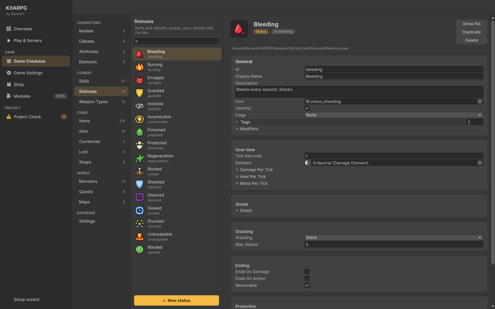

状态与增益
状态是持续一段时间的增益和减益：中毒、燃烧、眩晕、减速、定身、沉默、护盾、恢复、隐身、无敌。本页介绍状态的每个字段、叠加、持续伤害和持续治疗、护盾、免疫和抗性、技能提供的普通数值增益，以及如何一步步制作状态。
状态是什么
状态是一个只定义一次、可以由任何东西施加的资源：技能（Apply Status 效果）、消耗品（Status 物品效果）、首领阶段、到达保护，或你自己的代码。在它持续期间，它可以：
- 阻止其持有者做某些事（眩晕、定身、沉默、缴械）或保护它（隐身、无敌、不可阻挡）。
- 改变数值：任何修正值组合，按层计算。减速就是负的移动速度百分比。
- 每隔几秒造成伤害、治疗或改变法力值。
- 用护盾吸收伤害。
- 提供对其他状态的免疫和抗性。
- 在持有者身上显示一个循环特效。
状态在玩家和怪物身上的作用方式相同。
还有第二种更轻量的增益：Stat Buff 技能效果，它无需状态资源就能在一段时间内改变数值。参见普通数值增益。
状态在哪里

Game Database > Combat > Statuses 列出每个状态。在那里创建（+ New status）或用 Create > KitARPG > Status 创建。
在游戏中：
- 玩家的状态以图标形式显示在快捷栏上方，带有层数或剩余护盾，以及剩余秒数。
- 怪物在其名牌上方显示一排状态图标。
- 首领血条显示首领的增益。
- 把鼠标悬停在状态上会显示其卡片：名称和持续时间、它阻止什么、每跳伤害或治疗、护盾、叠加、如何结束、它提供的免疫以及它的数值变化。
字段
除 Id、Display Name、Description 和 Icon 外：
Basics
| 字段 | 作用 | 默认值 |
|---|---|---|
Harmful（harmful） |
减益：作用于敌人，净化会移除它，免疫可以阻挡它。关闭：作用于施法者和盟友的增益，驱散会移除它。 | On |
Flags（flags） |
它阻止持有者做什么，或保护持有者免受什么。可任意组合；参见标志。 | None |
Tags（tags） |
它所属的分组，例如 control、slow、poison 或 magic。免疫和抗性会指定这些标签。任意文本；不区分大小写。 |
空 |
Modifiers（modifiers） |
持续期间的数值变化，按层计算。一个完整的修正值组合。 | 空 |
Over time
| 字段 | 作用 | 默认值 |
|---|---|---|
Tick Seconds（tickSeconds） |
每两跳之间的秒数。至少 0.1。 | 1 |
Element（element） |
伤害跳的元素。留空则使用默认元素。 | None |
Damage Per Tick（damagePerTick） |
每跳每层的伤害，按状态等级。会随施法者对该元素的伤害和威力增长，并扣除持有者的抗性。永不暴击，至少为 1。 | 0 |
Heal Per Tick（healPerTick） |
每跳每层的生命值，按状态等级。会随施法者的治疗和治疗加成增长。 | 0 |
Mana Per Tick（manaPerTick） |
每跳每层的法力值，按状态等级。负值会消耗法力。 | 0 |
Shield
| 字段 | 作用 | 默认值 |
|---|---|---|
Shield（shield） |
在生命值之前吸收的伤害，按状态等级和层数。护盾耗尽时状态结束。 | 0 |
Stacking
| 字段 | 作用 | 默认值 |
|---|---|---|
Stacking（stacking） |
它作用于已经拥有它的目标时会发生什么。参见叠加。 | Refresh |
Max Stacks（maxStacks） |
使用 Stack 时同时最多的层数。 | 5 |
Ending
| 字段 | 作用 | 默认值 |
|---|---|---|
Ends On Damage（endsOnDamage） |
受到伤害时结束，例如睡眠或冰冻。 | Off |
Ends On Action（endsOnAction） |
攻击或施法时结束，例如隐身。 | Off |
Removable（removable） |
净化和驱散效果可以移除它。 | On |
Protection
| 字段 | 作用 | 默认值 |
|---|---|---|
Grants（grants） |
它持续期间其持有者拥有的免疫和抗性。它生效时，持有者现在免疫的任何状态都会被移除。参见免疫与抗性。 | 空 |
Look
| 字段 | 作用 | 默认值 |
|---|---|---|
Effect（effect） |
持续期间在持有者身上循环播放的特效：Prefab、Socket（Body、Floor、Head、RightHand、LeftHand）、Follow、Lifetime、Tint。它会随持有者的体型放大。 | 在身体上，跟随 |
等级值
Damage Per Tick、Heal Per Tick、Mana Per Tick 和 Shield 是等级值：1 级时为 Base Value，之后每级加上 Per Level。状态的等级为：
- 由技能施加时，为技能的等级；
- 由消耗品施加时，为物品效果的 Level。
因此每跳 2 伤害、每级 +1 的 Poisoned，在 Poison Arrow 1 级时造成 2，在 3 级时造成 4。
标志
| 标志 | 持有者不能做什么，或获得什么 |
|---|---|
| Stun | 不能移动、攻击或施法。打断当前的攻击和施法。播放 Stunned 动画。 |
| Root | 不能移动。仍可以攻击和施法。不能冲刺或跳跃，但可以传送。 |
| Silence | 不能施放技能。打断当前的施法。 |
| Disarm | 不能使用普通攻击。打断当前的攻击。 |
| Invisible | 怪物会失去对它的追踪。敌方玩家根本不会通过网络收到它，因此被修改过的客户端也无法显示它。盟友和持有者自己仍能看到它。 |
| Invulnerable | 不受伤害（改为显示 "Immune"），也不受有害状态影响。 |
| Unstoppable | 眩晕、定身、沉默和缴械不会生效，且它不能被推开或拉近。 |
Stun、Root、Silence 和 Disarm 是控制标志。持有者不可阻挡时，其身上的控制标志会被忽略。
在俯视角模式中，被眩晕或定身的玩家不会行走，但会保留指令，结束后继续执行。减速出现和消失时会改变行走速度。
叠加
| 选项 | 再次生效时会发生什么 |
|---|---|
| Refresh | 计时器重新开始。较短的永远不会截断较长的：1 秒的眩晕作用于 3 秒的眩晕上时，保留 3 秒。 |
| Stack | 增加新的层数，最多到 Max Stacks，并重新开始计时。修正值、伤害、治疗、法力和护盾都按层计算。 |
| Ignore | 在结束前不能再次生效。 |
两个状态来自同一个状态资源时才算 "相同"。不同的状态之间永远不会叠加。
持续伤害、治疗和法力
状态持续期间，每 Tick Seconds 发生一跳：
- 伤害：
Damage Per Tick × 层数，然后套用元素公式：加上施法者对该元素的固定伤害，乘以 (1 + 施法者的威力)，减去持有者的固定抗性，乘以 (1 − 百分比抗性，最高到元素的上限)。永不暴击，至少为 1。护盾和无敌适用。 - 治疗：
Heal Per Tick × 层数，然后 (数量 + 施法者的治疗) × (1 + 施法者的治疗加成)。 - 法力：
Mana Per Tick × 层数，增加或扣除。
施法者的数值在状态生效时被记录下来，因此在施法者离开或死亡后，中毒仍会以全额强度继续跳。持续伤害造成的击杀算作施法者的。
护盾
带有 Shield 的状态在生命值之前吸收伤害。有多个护盾时，最早的先吸收。当没有伤害穿透时，持有者头顶显示 "Absorbed"。护盾状态在护盾耗尽时结束，即使还有剩余时间。使用 Stack 时，每层都会增加其护盾。
免疫与抗性
状态防御（StatusDefense）说明战斗者能抵御哪些有害状态，或持续时间更短。职业有一个（Status Defense），怪物有一个，状态在持续期间也会提供一个（Grants）。
| 字段 | 作用 | 默认值 |
|---|---|---|
Immune To（immuneTo） |
带有其中任一标志的状态永远不会生效。 | None |
Immune Tags（immuneTags） |
带有其中任一标签的状态永远不会生效。 | 空 |
Immune Statuses（immuneStatuses） |
这些状态永远不会生效。 | 空 |
Resistances（resistances） |
持续时间缩短的状态。 | 空 |
Tag（tag） |
带有此标签的任何状态。留空则改为指定一个状态。 | 空 |
Status（status） |
Tag 为空时指定的一个状态。 | None |
Percent（percent） |
缩短的整数百分比，从 0 到 100。100 即免疫。 | 0 |
当有害状态试图生效时，按以下方式处理：
- 如果持有者无敌，它不会生效。
- 如果持有者不可阻挡且该状态带有控制标志，它不会生效。
- 如果持有者的职业或怪物防御，或持有者身上任何提供防御的状态，对它免疫（通过标志、标签、状态或 100% 抗性），它不会生效。
- 否则，所有这些防御中最强的匹配抗性会缩短它的持续时间：40% 的抗性把 5 秒的眩晕变为 3 秒。
被拒绝的状态会在持有者头顶显示 "Immune"，每秒最多一次，避免区域技能刷屏。
防御只阻挡有害状态。增益总会生效。
示例中的例子：
- Unbreakable（状态）：Unstoppable，并提供对
slow标签的免疫。 - Warded（状态，来自 Antidote）：提供对
poison标签的免疫。它生效时，持有者身上已有的中毒会被移除。 - Giant Slime（怪物）：减速在它身上的持续时间减半。
- Mushroom King（首领）：免疫眩晕、定身和沉默；减速持续时间减半，中毒减少 30%。
普通数值增益
Stat Buff 技能效果无需状态资源即可提供增益：在一段时间内生效的修正值组合，或把每个数字取负的减益。它的图标就是技能的图标。它没有标志、跳、护盾或叠加；再次施放同一技能会替换它。净化和驱散可以移除它。参见 Stat Buff。
当你需要跳、控制、护盾、层数、用于免疫的标签，或来自多个技能和物品的同一个增益时，请改用状态。
移除状态
- Remove Status 技能效果：净化（从盟友身上移除减益）或驱散（从敌人身上移除增益），可按状态或标志筛选，移除指定数量或全部。参见 Remove Status。
- Removable 关闭的状态永远不会以这种方式被移除。示例中的 Invulnerable、Protected、Guarded 和 Enraged 无法被移除。
- 所有状态都会在时间耗尽、持有者死亡时结束，或通过 Ends On Damage 或 Ends On Action 结束。
示例状态
| 状态 | 类型 | 作用 | 标签 |
|---|---|---|---|
| Poisoned | 减益 | 每秒 2 点土伤害（每级 +1），最多叠加 5 层 | poison, damage over time |
| Burning | 减益 | 每秒 4 点火伤害（每级 +2） | fire, damage over time |
| Bleeding | 减益 | 每秒 3 点中性伤害（每级 +1），最多叠加 3 层 | bleed, damage over time |
| Stunned | 减益 | Stun | control |
| Slowed | 减益 | -40% 移动速度 | slow |
| Rooted | 减益 | Root | control |
| Silenced | 减益 | Silence | control, magic |
| Shielded | 增益 | 吸收 30 伤害（每级 +15），Unstoppable | |
| Regeneration | 增益 | 每秒治疗 5（每级 +2） | |
| Invisible | 增益 | Invisible，+25% 移动速度，攻击或施法时结束 | |
| Invulnerable | 增益 | Invulnerable，不可移除 | |
| Protected | 增益 | Invulnerable，攻击或施法时结束，不可移除 | |
| Guarded | 增益 | Invulnerable，不可移除（首领的仆从存活期间） | |
| Unbreakable | 增益 | Unstoppable，免疫减速 | |
| Enraged | 增益 | +50% 威力，+30% 攻击速度，+20% 移动速度，不可移除 | |
| Warded | 增益 | 免疫中毒 |
有两个状态在 Game Database > Settings 中设置：
| 字段 | 作用 | 默认值 |
|---|---|---|
Boss Guard Status（bossGuardStatus） |
首领召唤的怪物存活期间施加在首领身上。示例使用 Guarded。 | None |
Arrival Status（arrivalStatus） |
玩家在地图中出现或复活时施加在其身上。应在攻击或施法时结束。示例使用 Protected。 | None |
Arrival Seconds（arrivalSeconds） |
到达状态持续的秒数。 | 4 |
制作状态
本例制作 Frozen（冰冻）：持有者不能移动或攻击，冰冻期间受到更多水伤害，被击中时破冰而出。战士能抵抗它。
- 打开 Game Database > Combat > Statuses 并按 + New status。在 Id 中输入
frozen，在 Display Name 中输入Frozen，并写一段 Description，例如 "Frozen solid. Breaks when hit."。设置一个 Icon。 - 保持 Harmful 开启。在 Flags 中勾选 Root 和 Disarm。
- 在 Tags 中添加
control和cold。 - 在 Modifiers > Resistance Percent 中添加 Water，值为
-0.2：被冰冻的目标受到的水伤害增加 20%。Damage Per Tick 保持为 0（见下面的警告）。 - 在 Stacking 中，把 Stacking 设为 Refresh。
- 在 Ending 中勾选 Ends On Damage。保持 Removable 开启，让 Purify 可以为盟友解冻。
- 在 Look 中，把 Effect 设为 Body 挂点上的冰霜特效预制体，开启 Follow。
- 把它放到技能上：打开 Frost Nova，把其 Rooted 效果替换为 Apply Status：Frozen，3 秒。
- 让战士更能抵抗它：打开 Classes > Warrior > Status Defense > Resistances，添加 Tag
cold、Percent 50。 - 用法师进入游戏，对一群怪物施放 Frost Nova：它们停下并停止攻击；每个怪物受到的第一次攻击会打碎它的冰。Frost Nova 的卡片显示 "Frozen for 3s"、"Can't move"、"Can't attack"、"Ends when hit" 以及水抗性的变化。
Ends On Damage 计入每次命中，包括状态自身的伤害跳。同时带有 Ends On Damage 和 Damage Per Tick 的状态会在第一跳时结束。
单人模式和 MMO
状态在两种模式下都在服务器上运行。服务器维护列表、执行跳、结束状态，并向每个客户端发送每个状态的轻量视图（id、结束时间、层数、剩余护盾）以及组合后的标志；客户端据此绘制图标和特效。
- 状态不会被保存。角色死亡或离开地图时它们会结束。
- 在 MMO 中，隐身由网络可见性系统执行：敌方玩家的客户端根本不会收到隐身的战斗者。在单人模式中，隐身的怪物在主机上也会被隐藏。
提示
- 多用标签。对
control免疫的首领只需一行，并能涵盖你以后添加的每个眩晕、定身和沉默。 - 让眩晕保持短暂（1 到 2 秒），并给首领抗性而不是完全免疫，这样控制仍然有用。
- 玩家应逐步累积的持续伤害使用 Stack，控制和增益使用 Refresh。
常见错误
- 增益没有作用于敌人。 Harmful 关闭的状态作用于施法者和盟友。减益请开启 Harmful。
- 状态立即结束。 施加它的技能或物品的 Duration 为 0，或者它同时带有 Ends On Damage 和伤害跳（见上文）。
- 免疫没有阻挡某个状态。 该状态没有防御所指定的标签或标志。标签必须匹配（不区分大小写）。
- -40 的减速让角色站着不动。 百分比数值是小数：-40% 是
-0.4。